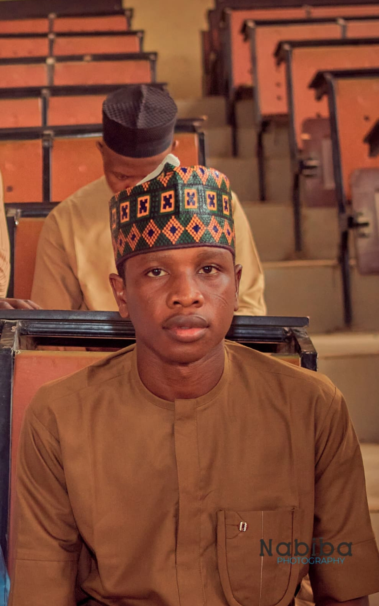
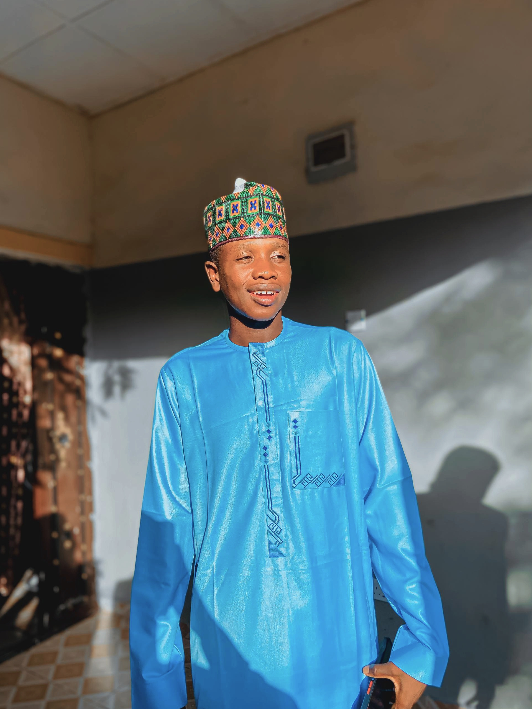

About Me
I am Auwal Alhaji Hassan, an Information Technology student at Bayero University Kano (BUK). I am a passionate Full-Stack Web Developer and Networking Specialist with a strong focus on System Security.
Beyond my technical skills, I am an Staff member at Zahra Golden Bakery, where I contribute to the management and daily operations of the business. This role has helped me develop strong leadership and organizational skills outside the IT field.
- Education: B.Sc Information Technology (BUK)
- Focus: Web Dev, & IT Security
- Business: Staff, Zahra Golden Bakery Gwagwalada Abuja